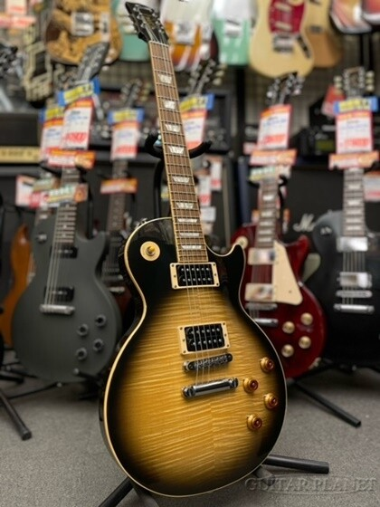
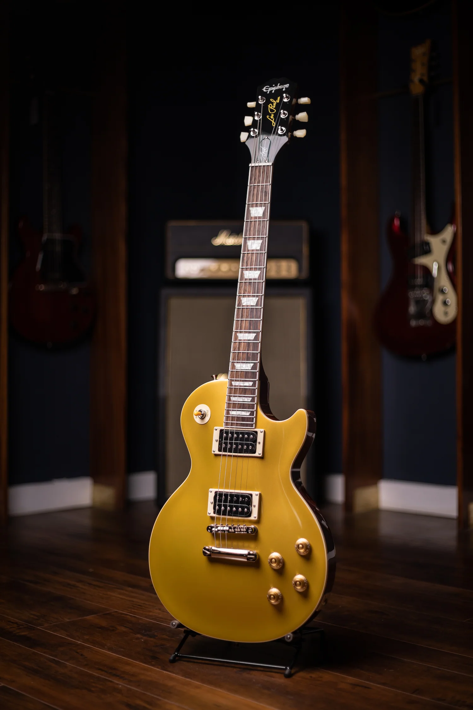
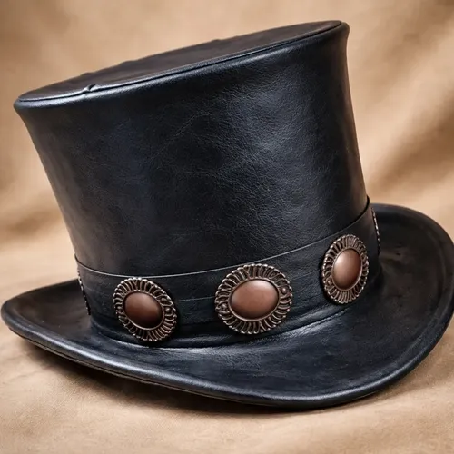
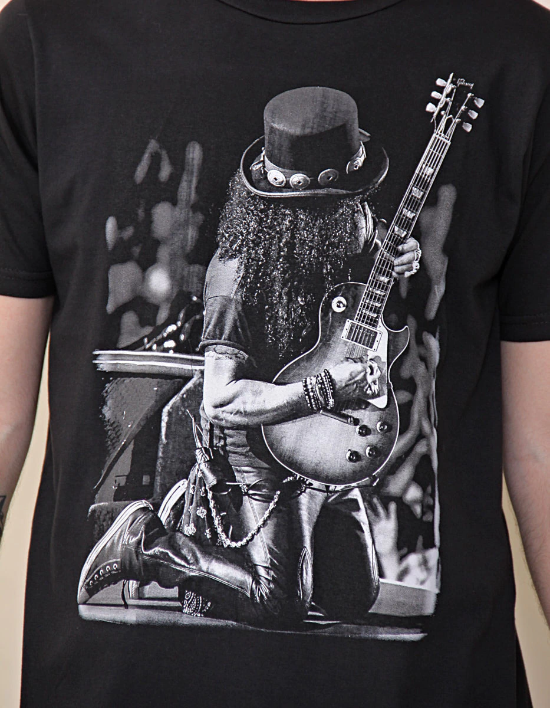
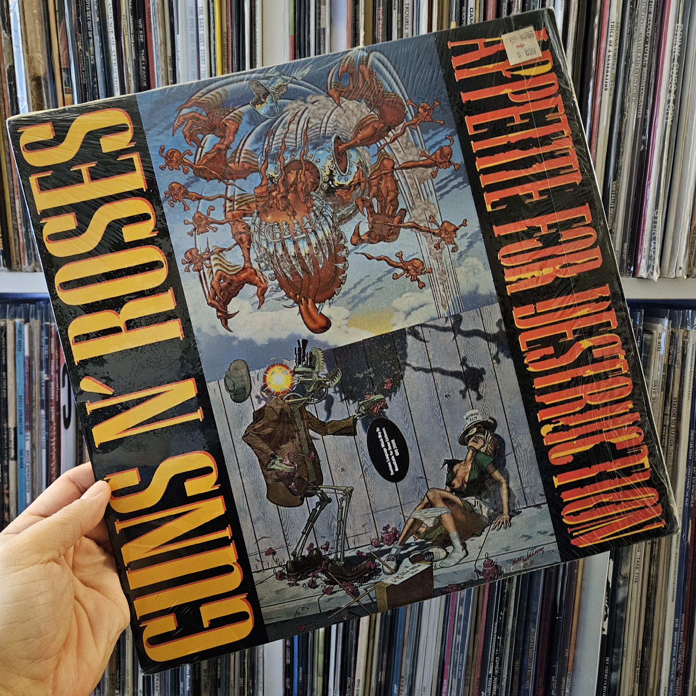

Gira Internacional con The Conspirators
Slash continúa de gira con Myles Kennedy & The Conspirators, presentando en vivo las canciones de su álbum 4 y clásicos de su catálogo con fechas en Latinoamérica, Europa y Estados Unidos.
Histórico guitarrista, compositor y uno de los grandes íconos del rock.
Ver más distincionesHat & Roses es un sitio dedicado a conocer la historia, la música y la trayectoria de Slash.
Saul Hudson, conocido artísticamente como Slash, nació el 23 de julio de 1965 en Hampstead, Londres, y creció en Los Ángeles, California. Desde su adolescencia encontró en la guitarra su mayor vocación, influenciado fuertemente por bandas clásicas de hard rock y blues como Led Zeppelin, Jimi Hendrix y Aerosmith.
En 1985 se unió como guitarrista principal a Guns N' Roses, banda con la que alcanzó el éxito internacional. Su desempeño en discos históricos como Appetite for Destruction y los volúmenes de Use Your Illusion dejó una huella imborrable en la música con himnos como "Sweet Child O' Mine", "November Rain" y "Welcome to the Jungle". Su imagen con galera de copa alta, rulos oscuros y la guitarra Gibson Les Paul se convirtió en un símbolo global del rock.
Además de Guns N' Roses, formó sus propios proyectos como Slash's Snakepit, fundó la superbanda Velvet Revolver y consolidó su proyecto solista junto a Myles Kennedy & The Conspirators, además de participar en multitudinarias giras mundiales de reunión.
Novedades recientes sobre los conciertos, proyectos y lanzamientos de Slash.
Slash continúa de gira con Myles Kennedy & The Conspirators, presentando en vivo las canciones de su álbum 4 y clásicos de su catálogo con fechas en Latinoamérica, Europa y Estados Unidos.
Presentó su esperado trabajo discográfico dedicado al blues tradicional, con destacadas colaboraciones de cantantes invitados de renombre como Brian Johnson, Steven Tyler e Iggy Pop.
La banda clásica de rock sigue encabezando escenarios en los festivales más convocantes del mundo, repasando décadas de historia frente a miles de fanáticos.
Guitarras utilizadas por Slash, indumentaria característica y discografía oficial.

Acabado Appetite Burst, pastillas Custom Burstbucker Alnico II y perfil de mástil de los años 50.
$2.999 USD
Inspirada en la clásica guitarra dorada de Slash, cuerpo de caoba y clavijas vintage.
$899 USD
El icónico sombrero de copa alta confeccionado en cuero negro con banda decorativa de conchos metálicos.
$85 USD
Remera negra 100% de algodón con estampa serigrafiada oficial de Slash.
$35 USD
Edición remasterizada en vinilo pesado de 180 gramos del legendario álbum debut de Guns N' Roses.
$42 USD
Edición especial autografiada a mano por Slash. Grabado en directo en RCA Studio A de Nashville.
$75 USDReconocimientos internacionales por su virtuosismo y trayectoria en el rock.
Inducido en 2012 junto a Guns N' Roses durante su primer año de elegibilidad.
Estrella oficial en el legendario Hollywood Walk of Fame (Hollywood Blvd).
Ganador al "Mejor Desempeño de Hard Rock" con Velvet Revolver por el tema Slither.
Votado por la revista Total Guitar por el riff y solo de Sweet Child O' Mine.
Reconocido por la revista TIME como el segundo mejor guitarrista eléctrico de todos los tiempos.
Primer Embajador de Marca Global en toda la historia de la compañía de guitarras Gibson.